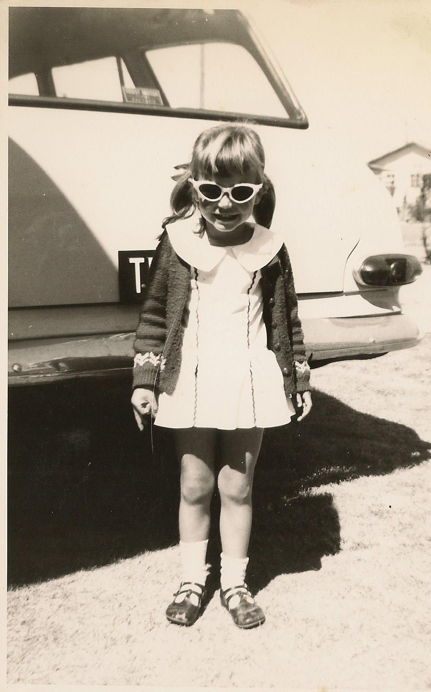

* * * * * * It's Louwise's 60th Birthday Party * * * * * *
* * * * * * * * * * * * * * Be there with bells on * * * * * * * * * * * * * * * *

* * * * * * * * * * * * * on Sunday, the 21st of May * * * * * * * * * * * * * *
- Daniel will drop us all off at the Golf Club at about 6pm,
- we'll have Bubbles and Blinis with Caviar, or a sausage roll, by the big fireplace,
- dinner will be served at 8:30pm in the V.I.P. dining room with special selection of first class wine from the cellar,
- we'll move to the lounge where there will be music and dancing until 12:30am,
- Daniel will give us all a ride home in his nice Hummer
- don't forget to let us know your preferred after-dinner digestif which will be consumed on the way home

There are two choices of after-dinner drinks on the home run; Bourbon Amaro Cocktail.
Amaro is an Italian liquor that means "bitter" and it's typically served
as an after-dinner
digestif. Don't worry though, it also has a hint of
warmth and sweetness that's perfect
with a cherry garnish.
OR
Chocolate Martini.
Chocolate lovers, this drink is for you! The sweet dessert-like cocktail
is made with chocolate liquor, chocolate syrup, and chocolate shavings—
for good measure.
* * * * * * * * * * * * * * * * * * * * * * * * * * * * * * * * * * * * * * * *